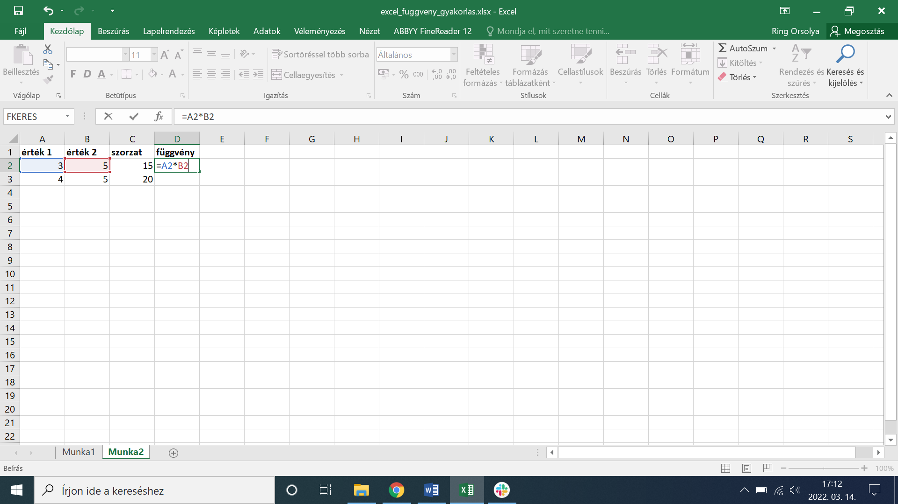

7 Gyakorlati példa: Levéltári nyilvántartás készítése
7.1 A feladat
Digitális nyilvántartás készítése
Mezők: 1. Jelzet 2. Fond megnevezése 3. Kezdő év 4. Záró év 5. Terjedelem (iratfolyóméter) 6. Raktári épület 7. Digitalizálva (Igen/Nem/Részben)
7.2 Előkészületek
7.3 Fejléc sor
7.3.1 Oszlopnevek beírása
Kattints A1-re, majd írd be (Tab-bal ugorj):
A1: Jelzet
B1: Fond_megnevezése
C1: Kezdő_év
D1: Záró_év
E1: Terjedelem_ifm
F1: Raktári_épület
G1: Digitalizálva7.4 Adatok felvitele
7.4.1 Első fond
Kattints A2-re, írd be (Tab-bal tovább):
A2: XXV-1
B2: Tanácsi ülések jegyzőkönyvei
C2: 1950
D2: 1990
E2: 5
F2: I. épület
G2: IgenAz utolsó mezőnél Enter → ugrik A3-ra (következő fond).
7.4.2 További fondok (min. 10 db)
Mintaadatok:
| Jelzet | Megnevezés | Kezdő | Záró | Terjedelem (ifm) | Raktár | Digitalizálva |
|---|---|---|---|---|---|---|
| XXVI-I-3 | Magyar Állami Operaház | 1945 | 1989 | 9 | I. épület | Igen |
| XXVI-I-4 | Állami Hangverseny- és Műsorigazgatóság | 1956 | 1964 | 5 | II. épület | Nem |
| XXVI-I-5 | Magyar Állami Népi Együttes | 1950 | 1986 | 6.6 | I. épület | Részben |
| XXVI-I-6 | Huszonötödik Színház | 1969 | 1977 | 1.9 | II. épület | Nem |
| XXVI-I-7 | Állami Déryné Színház | 1951 | 1977 | 4 | I. épület | Igen |
| XXVI-I-8 | Nemzeti Színház | 1933 | 1997 | 17.85 | III. épület | Nem |
| XXVI-I-9 | Pesti Hírlap | 1845 | 1944 | 0.72 | II. épület | Részben |
| XXVI-I-10 | Műcsarnok | 1952 | 1992 | 14.64 | I. épület | Nem |
| XXVI-I-23 | Magyar Filmtudományi Intézet és Filmarchívum | 1960 | 1977 | 6.2 | III. épület | Igen |
| XXVI-I-65 | Színház- és Filmtudományi Intézet | 1957 | 1959 | 0.6 | II. épület | Részben |
Tipp: Legyünk következetesek! „I. épület” (pont után szóköz) vagy „I.épület”? Válasszunk egyet és alkalmazzuk mindig ugyanúgy!
Mentés: Ctrl+S
7.5 Formázás
7.6 Szűrés és rendezés
7.6.1 Rendezés időrendi sorrendbe
- Kattintsunk „Kezdő_év” nyílra (▼)
- Rendezés legkisebbtől a legnagyobbig
7.7 Adatellenőrzés
7.7.1 Évek ellenőrzése (1800–2024)
- Jelöljük ki C2:C100 (Kezdő_év)
- Adatok → Adatellenőrzés
- Beállítások:
- Engedélyezés: Egész szám
- Adatok: között
- Minimum: 1800
- Maximum: 2024
- Hibajelzés:
- Cím: „Hibás év”
- Üzenet: „1800–2024 között!”
- OK
Ismételd meg D2:D100-ra (Záró_év)!
7.8 Statisztikák
7.9 Excel függvények
A képleteket mindig = jellel indítjuk a cellákban – ezáltal ismeri fel az Excel, hogy képlet vagy függvény következik.
| Függvény | Mit csinál? | Példa |
|---|---|---|
| SZUM | Összesíti a kijelölt tartomány értékeit | =SZUM(A2:A25) |
| ÁTLAG | Kiszámolja a kijelölt elemek átlagát | =ÁTLAG(A2:A25) |
| MIN / MAX | A legkisebb / legnagyobb elemet határozza meg | =MIN(A2:A42) =MAX(A2:A42) |
| DARAB | Megszámolja, hány darab szám van a tartományban | =DARAB(A2:A32) |
| DARAB2 | Megszámolja, hány darab nem üres mező van a tartományban | =DARAB2(A2:A32) |
| DARABÜRES | Megszámolja, hány darab üres mező van a tartományban | =DARABÜRES(A2:A32) |
| ÉS | Halmozott feltételek – eredmény IGAZ, ha minden feltétel teljesül | =ÉS(B2>50; D2="nő") |
| VAGY | Halmozott feltételek – eredmény IGAZ, ha legalább egy feltétel teljesül | =VAGY(B2>50; D2="nő") |
| BAL | A szöveg bal oldaláról ad vissza meghatározott számú karaktert | =BAL(A2;3) → első 3 karakter |
| KÖZÉP | A szöveg meghatározott pozíciójától ad vissza karaktereket | =KÖZÉP(A2;4;3) → 4. karaktertől 3 db |
| JOBB | A szöveg jobb oldaláról ad vissza meghatározott számú karaktert | =JOBB(A2;3) → utolsó 3 karakter |
| AZONOS | IGAZ/HAMIS: a két cella pontosan azonos-e (kis/nagybetű is számít) | =AZONOS(A2;A3) |
| DÁTUM | Számokból dátumformátumot hoz létre | =DÁTUM(2022;3;9) → 2022.03.09. |
| FKERES | Listából keres ki egy értéket és visszaadja a kapcsolt adatot | =FKERES(A2;$W$1:$Z$57;4;0) |
| ÖSSZEFŰZ | Két vagy több cella tartalmát fűzi össze | =ÖSSZEFŰZ(A2;" ";B2) |
Levéltári példák a szövegfüggvényekre:
A BAL, KÖZÉP és JOBB függvények jelzetkezelésnél hasznosak. Ha a jelzet formátuma XXV-1, és szeretnénk kinyerni a fondfőcsoport számát:
A2: XXV-1
=BAL(A2;3) → XXV (fondfőcsoport jelzete)
=KÖZÉP(A2;5;1) → 1 (fond sorszáma)7.9.1 Cellahivatkozások rögzítése
Alapértelmezés szerint a cellahivatkozások relatívak – másoláskor automatikusan módosulnak. A $ jellel rögzíthetjük őket:
| Rögzítés | Jelentés |
|---|---|
$A2 |
Csak az oszlop rögzített, a sor másoláskor változik |
A$2 |
Csak a sor rögzített, az oszlop másoláskor változik |
$A$2 |
Oszlop és sor is rögzített – másoláskor sem változik |


Gyorsbillentyű: Jelöljük ki a hivatkozást a képletben, majd nyomjuk meg az F4 billentyűt (egyes laptopokhoz: Fn+F4) – az Excel végigváltja a négy rögzítési módot.
Levéltári példa: Ha a tárgyévet egy fix cellában tároljuk ($B$1), és minden fond esetén arra hivatkozunk a számításban, rögzítés nélkül a másolásnál „eltolódna” a hivatkozás.
B1: 2024 ← rögzített referencia-év
C2: =B1-A2 ← rossz: másoláskor B2, B3... lesz belőle
C2: =$B$1-A2 ← jó: $B$1 mindig a rögzített évet vesziMentés: Ctrl+S
7.10 Vizualizáció
7.10.1 Kimutatás (Pivot tábla) – Épületek szerinti megoszlás
- Kattintunk az adattáblán
- Beszúrás → Kimutatás
- Új munkalap → OK
- Kimutatásmezők panel (jobbra):
- Húzzuk „Raktári_épület” → Sorok
- Húzzuk „Raktári_épület” → Értékek
Eredmény:
Raktári_épület Darab
I. épület 4
II. épület 3
III. épület 27.11 Gyakori hibák
Szűrés nem működik → Üres sorok vannak
Adatellenőrzés nincs → Rossz tartomány
DARAB2 rossz → Fejléc benne van a tartományban
Ablaktábla rögzítése nem működik → Rossz cellán állunk (A2 kell!)
Miről volt szó ebben a részben: 1. Strukturált tábla (fejléc, sorok, nincs üres) 2. Formázás (táblázat, ablaktábla rögzítése) 3. Szűrés és rendezés 4. Adatellenőrzés (számok, legördülő lista) 5. Statisztikák (DARAB2, DARABTELI, ÁTLAG) 6. Vizualizáció (kimutatás, grafikon)
7.12 Ellenőrző kérdések
- Miért fontos az első sor fejléc?
- Miért rossz összevont cellákat használni?
- Hogyan állíthatunk be legördülő listát?
- Mi a különbség a Szűrő és a Kimutatás között?
- Hogyan rögzíthetjük a fejléc sort?
- Milyen képlet számolja a rekordokat?
- Milyen képlet számolja az „Igen” értékeket?
- Miért fontos a konzisztencia az adatbevitelnél?
- Hogyan szűrhetünk egyszerre több feltétel szerint?